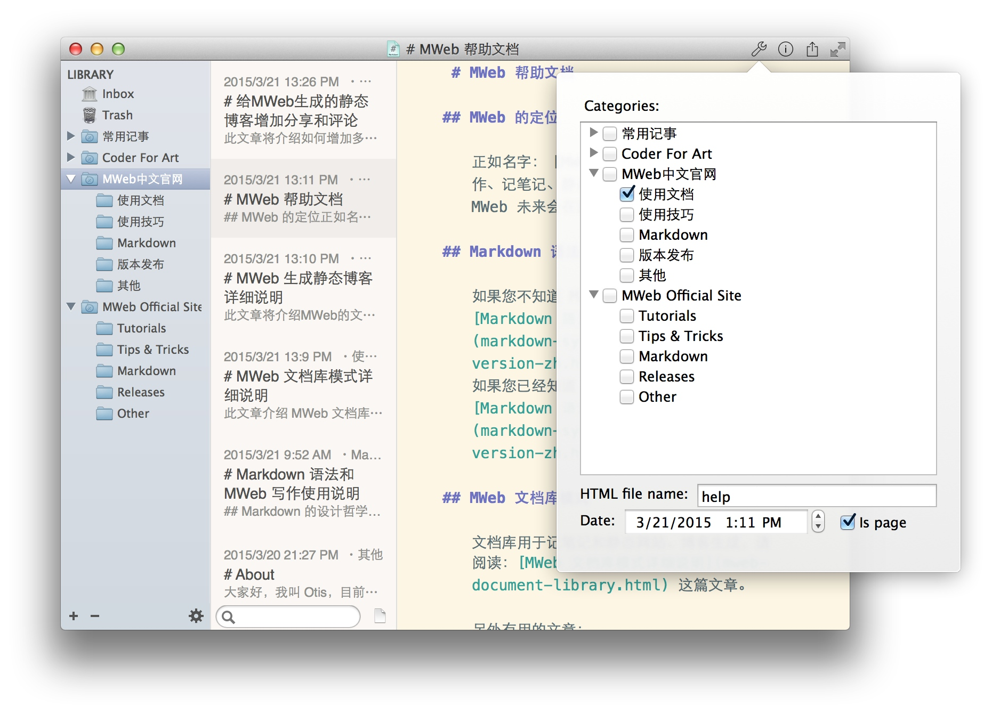
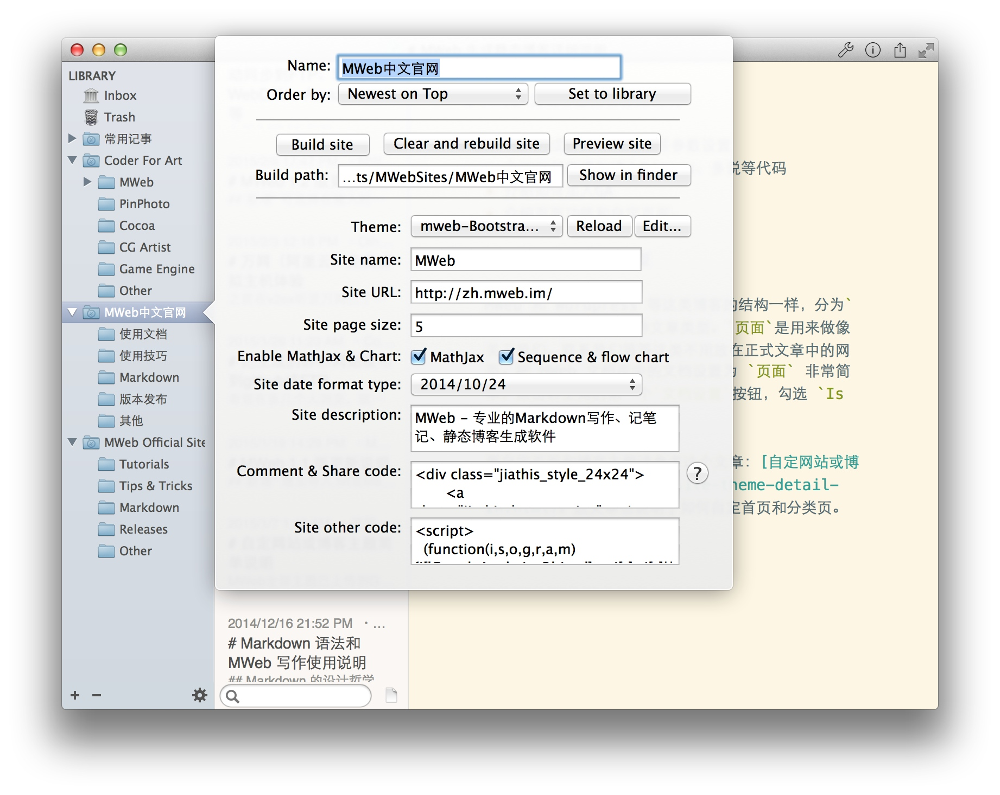

MWeb 生成静态博客详细说明
此文章将介绍MWeb的文章类型和生成静态博客的设置情况。
文章目录：
MWeb 中的两种文章类型
MWeb 和 Wordpress 等这类博客的结构一样，分为一般文章和页面两种文章类型。页面是用来做像关于我们、联系我们等等这类不用放在正式文章中的网页。

如上图，把 MWeb 文档库中的文档设置为 页面 非常简单，点击文档设置按钮（右上角第一个），勾选 Is page 即可。其中 HTML file name 栏是用来设置生成的 HTML 文件名的。比如说上图中的这个文章会生成 help.html。一般文章生成的 HTML 文件名也是在此设定。
要自定页面和博客主题请参考这个文章：自定网站或博客主题简单说明。这文章也说明了如何自定首页和分类页，MWeb 官网就是自定了首页。
MWeb 生成静态博客设置说明

如上图，双击或者右键点 Edit 即可以打开网站设置面板。如果你没看到这个面板，请点 Set to site 按钮。点 Build site 即可生成静态博客，点 Preview site 可预览效果。各项目设置说明如下：
- Order by: 文章的排序方式
- Build path: 生成的静态博客所在位置
- Theme: 博客主题
- Site name: 博客名称
- Site URL: 网站网址，请一定要以
/结束。 - Site page size: 博客第页显示文章数
- Enable MathJax & Chart: 博客是否支持 MathJax 和 顺序图、流程图
- Site date format type: 时间格式
- Site description: 博客描述
- Comment & Share code: 博客评论和分享的代码
- Site other code: 放置博客统计代码和其他代码的地方。
提示：如果你有改变到设置，请一定要点：Cear and rebuild site 按钮。
为博客增加评论和分享功能
简单来说就是把评论和分享的代码填入 Comment & Share code 这个输入框。可以参考 给MWeb生成的静态博客增加分享和评论 这篇文章。